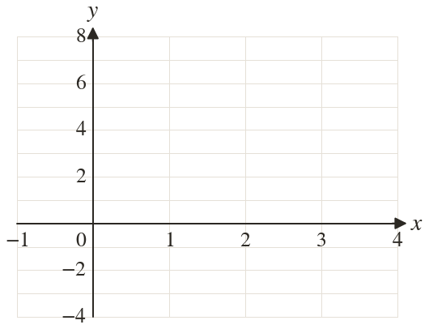
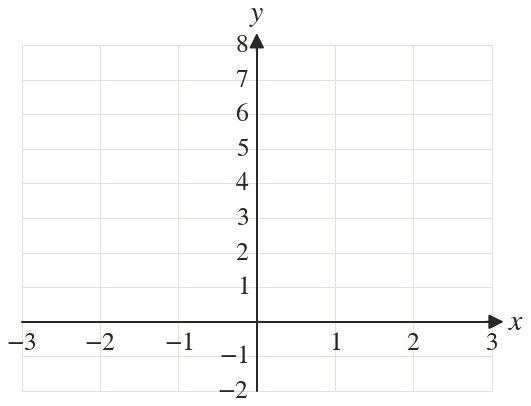
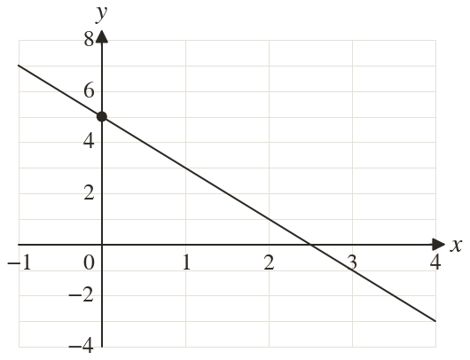
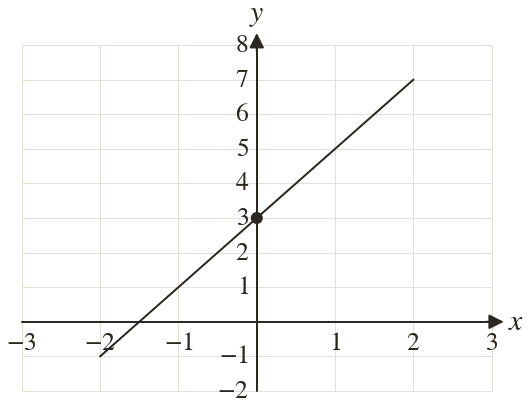

Westonbirt Maths · Line Segments and Quadrilaterals
Rearranging, Sketching and Checking Lines
Name: ______________________ Date: ____________
1
Rearrange into the form = mx + then draw it for from to
2
Rearrange into the form = mx + then draw it for from to
3
Write the equations of the horizontal line and the vertical line through
4
Rearrange into the form = mx + State the gradient and the y-intercept.
5
Rearrange into the form = mx +
Ext
Sort into horizontal, vertical or neither:



